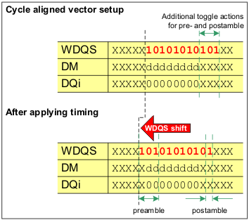

Strobe characteristics for write and read access due to latency shift
Due to latency shift in timing equations additional toggle actions are required for the strobes at the end of a sequence. These actions cover the pre- and postamble of the strobes (see following figure). This is true for write and read, whereby compare actions are used in the read case.

More details about pre- and postamble are provided in the GDDR data sheet.